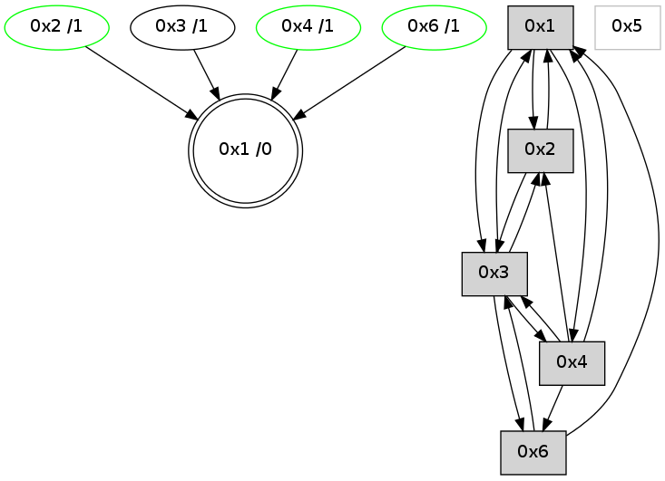

>> << IDX [start] -100 -25 -5 +0 +5 +25 +100 [755.043558121]
 Previous packets
----------------------------------------------------------------------
750.122478 beacon01(adaf) #0 coord=01,02,05,03,04,06 cycle=432.0ms assoc
-- color-indic=0 64 13 a5
750.132439 beacon02(adaf) #0 coord=01,02,05,03,04,06 cycle=432.0ms assoc 64 42 5a
750.142439 beacon05(adaf) #0 coord=01,02,05,03,04,06 cycle=432.0ms assoc 64 e4 70
750.152440 beacon03(adaf) #0 coord=01,02,05,03,04,06 cycle=432.0ms assoc 64 78 54
750.162440 beacon04(adaf) #0 coord=01,02,05,03,04,06 cycle=432.0ms assoc 64 de 7e
750.172440 beacon06(adaf) #0 coord=01,02,05,03,04,06 cycle=432.0ms assoc 64 aa 62
750.183573 [Hello(1): seq=452 sym=2,3,4,6 sysInfo= stat=2:1,0,11,13/3:3,0,2,0/4:4,0,5,2/6:9,0,8,9]
750.186244 [Hello(4): seq=553 sym=6,1,2 asym=3 sysInfo= stat=6:8,0,3,5/1:14,0,5,0/2:12,0,5,6/3:1,0,1,0]
750.189442 [STC(4)->1 #0.45 stable,to-color d=1]
750.192692 [TreeStatus(4)-.->1 #0.45 stable child=1]
750.199150 [STC(2)->1 #0.45 stable,to-color d=1]
750.201413 [TreeStatus(2)-.->1 #0.45 stable child=1]
750.205267 [Hello(3): seq=551 sym=4,2,1,6 sysInfo=hasWarning stat=4:0,0,1,1/2:5,0,4,6/1:14,0,1,0/6:1,0,4,5]
750.207470 [STC(3)->1 #0.45 to-color d=1]
----------------------------------------------------------------------
750.614586 beacon01(adaf) #0 coord=01,02,05,03,04,06 cycle=432.0ms assoc
-- color-indic=0 64 d7 ca
750.624546 beacon02(adaf) #0 coord=01,02,05,03,04,06 cycle=432.0ms assoc 64 86 35
750.634547 beacon05(adaf) #0 coord=01,02,05,03,04,06 cycle=432.0ms assoc 64 20 1f
750.644549 beacon03(adaf) #0 coord=01,02,05,03,04,06 cycle=432.0ms assoc 64 bc 3b
750.654547 beacon04(adaf) #0 coord=01,02,05,03,04,06 cycle=432.0ms assoc 64 1a 11
750.664547 beacon06(adaf) #0 coord=01,02,05,03,04,06 cycle=432.0ms assoc 64 6e 0d
750.676230 [Hello(2): seq=1044 sym=4,1,3 sysInfo= stat=4:2,0,1,1/1:10,0,3,0/3:15,0,4,1]
----------------------------------------------------------------------
751.106693 beacon01(adaf) #0 coord=01,02,05,03,04,06 cycle=432.0ms assoc
-- color-indic=0 64 9b 7a
751.116655 beacon02(adaf) #0 coord=01,02,05,03,04,06 cycle=432.0ms assoc 64 ca 85
751.126655 beacon05(adaf) #0 coord=01,02,05,03,04,06 cycle=432.0ms assoc 64 6c af
751.136654 beacon03(adaf) #0 coord=01,02,05,03,04,06 cycle=432.0ms assoc 64 f0 8b
751.146654 beacon04(adaf) #0 coord=01,02,05,03,04,06 cycle=432.0ms assoc 64 56 a1
751.156655 beacon06(adaf) #0 coord=01,02,05,03,04,06 cycle=432.0ms assoc 64 22 bd
751.167798 [Hello(1): seq=453 sym=2,3,4 sysInfo= stat=2:2,0,12,14/3:4,0,3,0/4:5,0,6,3]
751.171998 [Hello(4): seq=554 sym=3,6,1,2 sysInfo= stat=3:2,0,2,0/6:8,0,3,6/1:15,0,5,0/2:13,0,6,6]
----------------------------------------------------------------------
751.598802 beacon01(adaf) #0 coord=01,02,05,03,04,06 cycle=432.0ms assoc
-- color-indic=0 64 5f 15
751.608762 beacon02(adaf) #0 coord=01,02,05,03,04,06 cycle=432.0ms assoc 64 0e ea
751.618763 beacon05(adaf) #0 coord=01,02,05,03,04,06 cycle=432.0ms assoc 64 a8 c0
751.628763 beacon03(adaf) #0 coord=01,02,05,03,04,06 cycle=432.0ms assoc 64 34 e4
751.638763 beacon04(adaf) #0 coord=01,02,05,03,04,06 cycle=432.0ms assoc 64 92 ce
751.648763 beacon06(adaf) #0 coord=01,02,05,03,04,06 cycle=432.0ms assoc 64 e6 d2
751.660432 [Hello(2): seq=1045 sym=4,1,3 sysInfo= stat=4:2,0,1,1/1:11,0,3,0/3:0,0,4,1]
----------------------------------------------------------------------
752.090909 beacon01(adaf) #0 coord=01,02,05,03,04,06 cycle=432.0ms assoc
-- color-indic=0 64 12 12
752.100873 beacon02(adaf) #0 coord=01,02,05,03,04,06 cycle=432.0ms assoc 64 43 ed
752.110871 beacon05(adaf) #0 coord=01,02,05,03,04,06 cycle=432.0ms assoc 64 e5 c7
752.120871 beacon03(adaf) #0 coord=01,02,05,03,04,06 cycle=432.0ms assoc 64 79 e3
752.130871 beacon04(adaf) #0 coord=01,02,05,03,04,06 cycle=432.0ms assoc 64 df c9
752.140871 beacon06(adaf) #0 coord=01,02,05,03,04,06 cycle=432.0ms assoc 64 ab d5
752.151934 [Hello(1): seq=454 sym=2,3,4 sysInfo= stat=2:3,0,12,14/3:4,0,3,0/4:6,0,6,3]
752.155274 [STC(1) #0.46 to-color d=0]
752.157946 [Hello(4): seq=555 sym=3,6,1,2 sysInfo= stat=3:2,0,2,0/6:9,0,3,6/1:15,0,5,0/2:13,0,6,6]
----------------------------------------------------------------------
752.583017 beacon01(adaf) #0 coord=01,02,05,03,04,06 cycle=432.0ms assoc
-- color-indic=0 64 d6 7d
752.592978 beacon02(adaf) #0 coord=01,02,05,03,04,06 cycle=432.0ms assoc 64 87 82
752.602978 beacon05(adaf) #0 coord=01,02,05,03,04,06 cycle=432.0ms assoc 64 21 a8
752.612979 beacon03(adaf) #0 coord=01,02,05,03,04,06 cycle=432.0ms assoc 64 bd 8c
752.622978 beacon04(adaf) #0 coord=01,02,05,03,04,06 cycle=432.0ms assoc 64 1b a6
752.632978 beacon06(adaf) #0 coord=01,02,05,03,04,06 cycle=432.0ms assoc 64 6f ba
752.645112 [Hello(2): seq=1046 sym=4,1,3 sysInfo= stat=4:2,0,1,1/1:12,0,4,0/3:1,0,4,1]
752.648109 [STC(2)->1 #0.46 stable,to-color d=1]
752.651359 [TreeStatus(2)-.->1 #0.46 stable child=1]
----------------------------------------------------------------------
753.075127 beacon01(adaf) #0 coord=01,02,05,03,04,06 cycle=432.0ms assoc
-- color-indic=0 64 9a cd
753.085089 beacon02(adaf) #0 coord=01,02,05,03,04,06 cycle=432.0ms assoc 64 cb 32
753.095088 beacon05(adaf) #0 coord=01,02,05,03,04,06 cycle=432.0ms assoc 64 6d 18
753.105089 beacon03(adaf) #0 coord=01,02,05,03,04,06 cycle=432.0ms assoc 64 f1 3c
753.115090 beacon04(adaf) #0 coord=01,02,05,03,04,06 cycle=432.0ms assoc 64 57 16
753.125089 beacon06(adaf) #0 coord=01,02,05,03,04,06 cycle=432.0ms assoc 64 23 0a
753.136775 [Hello(4): seq=556 sym=3,6,1,2 sysInfo= stat=3:2,0,2,0/6:9,0,3,7/1:15,0,5,0/2:14,0,7,6]
753.141796 [Hello(1): seq=455 sym=2,3,4 sysInfo= stat=2:4,0,13,14/3:4,0,3,0/4:7,0,6,3]
----------------------------------------------------------------------
753.567235 beacon01(adaf) #0 coord=01,02,05,03,04,06 cycle=432.0ms assoc
-- color-indic=0 64 5e a2
753.577195 beacon02(adaf) #0 coord=01,02,05,03,04,06 cycle=432.0ms assoc 64 0f 5d
753.587196 beacon05(adaf) #0 coord=01,02,05,03,04,06 cycle=432.0ms assoc 64 a9 77
753.597196 beacon03(adaf) #0 coord=01,02,05,03,04,06 cycle=432.0ms assoc 64 35 53
753.607196 beacon04(adaf) #0 coord=01,02,05,03,04,06 cycle=432.0ms assoc 64 93 79
753.617196 beacon06(adaf) #0 coord=01,02,05,03,04,06 cycle=432.0ms assoc 64 e7 65
753.628882 [Hello(2): seq=1047 sym=4,1,3 sysInfo= stat=4:2,0,1,1/1:13,0,4,0/3:2,0,4,1]
----------------------------------------------------------------------
754.059343 beacon01(adaf) #0 coord=01,02,05,03,04,06 cycle=432.0ms assoc
-- color-indic=0 64 00 c3
754.069304 beacon02(adaf) #0 coord=01,02,05,03,04,06 cycle=432.0ms assoc 64 51 3c
754.079304 beacon05(adaf) #0 coord=01,02,05,03,04,06 cycle=432.0ms assoc 64 f7 16
754.089305 beacon03(adaf) #0 coord=01,02,05,03,04,06 cycle=432.0ms assoc 64 6b 32
754.099307 beacon04(adaf) #0 coord=01,02,05,03,04,06 cycle=432.0ms assoc 64 cd 18
754.109306 beacon06(adaf) #0 coord=01,02,05,03,04,06 cycle=432.0ms assoc 64 b9 04
754.120112 [Hello(1): seq=456 sym=2,3,4 sysInfo= stat=2:5,0,13,14/3:4,0,3,0/4:7,0,6,3]
754.124666 [Hello(4): seq=557 sym=3,6,1,2 sysInfo= stat=3:2,0,2,0/6:9,0,3,7/1:0,0,5,0/2:15,0,7,6]
----------------------------------------------------------------------
754.551451 beacon01(adaf) #0 coord=01,02,05,03,04,06 cycle=432.0ms assoc
-- color-indic=0 64 c4 ac
754.561411 beacon02(adaf) #0 coord=01,02,05,03,04,06 cycle=432.0ms assoc 64 95 53
754.581413 beacon03(adaf) #0 coord=01,02,05,03,04,06 cycle=432.0ms assoc 64 af 5d
754.591413 beacon04(adaf) #0 coord=01,02,05,03,04,06 cycle=432.0ms assoc 64 09 77
754.612067 [STC(1) #0.47 to-color d=0]
754.614158 [Hello(2): seq=1048 sym=1,3 sysInfo= stat=1:14,0,4,0/3:3,0,4,1]
754.616546 [Hello(6): seq=471 sym=3,1 sysInfo=hasWarning stat=3:8,0,3,0/1:15,0,7,0]